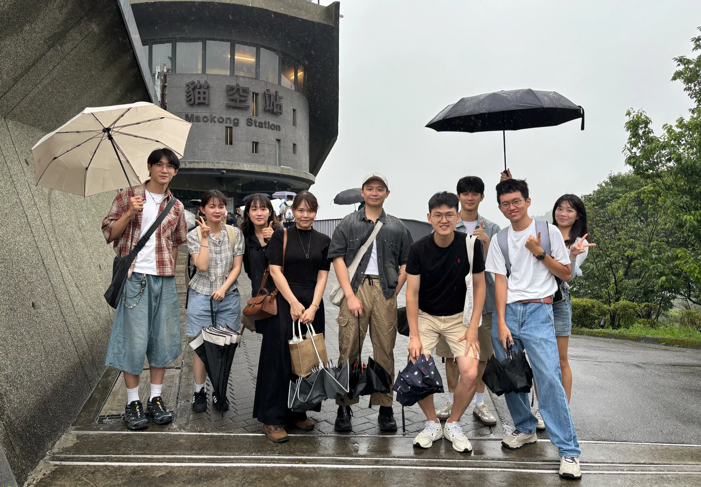

Hydrology and Earth System Sciences · 2026
Ground observations, satellites and reanalyses tell different stories about the timing of afternoon rain.
Gyuyeon Choi, Eunkyo Seo, Paul A. DirmeyerWe study how water stored on land shapes weather and climate.
SMAP
 Department of Environmental Atmospheric Sciences
Department of Environmental Atmospheric SciencesGround observations, satellites and reanalyses tell different stories about the timing of afternoon rain.
Gyuyeon Choi, Eunkyo Seo, Paul A. Dirmeyer

